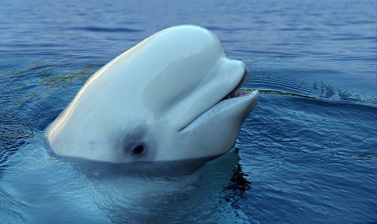

Beluga Whale 🐤
Quick Facts
Length: about 14 feet
Lifespan: about 35 to 50 years
Classification: Toothed
Distinguishing Feature(s): stark white coloring, prominent forehead
Gestation period: 14-15 months
Scientific name: Delphinapterus leucas
Overview
Belugas are a sociable bunch, often gathering in large numbers, and most of them are chatty as well. Their vocalizations, which include whistles, clicks, and grunts, earned them the nickname “sea canary.” In the summer, different groups of belugas will come together in the relatively warm waters of estuaries and the nearby coastal waters. Beluga mothers seem to find the quiet estuaries ideal for raising their newborns or yearlings—but it’s also a good environment for the belugas to molt. They have extremely thick skin that they shed all at once each summer, often rubbing on the bottom of the estuary to speed the process along. New skin cells grow rapidly.
Once commercially hunted, the much-admired beluga is now a star attraction in the growing ecotourism industry. It‘s also a poster child for ocean conservation. As a top predator, it’s being contaminated by toxic chemicals that are concentrated high in the food chain.
LOCATION
Beluga whales live in the Arctic Ocean and its nearby seas in the Northern Hemisphere.
They are common to many regions of Alaska, as well as Russia, Canada, and Greenland. Belugas are usually found in shallow coastal
waters during the summer months, often in shallow water.
DIET
Beluga whales have a varied diet consisting of octopus, squid, crabs, shrimp, clams,
snails, and sandworms. They also eat a variety of fish, including salmon, eulachon, cod, herring, smelt, and flatfish.

THREATS
Beluga whale populations are exposed to a variety of stressors and threats, including pollution
(e.g., chemicals, trash), shipping, energy exploration and development, commercial fishing, extreme weather events, strandings, predation
from killer whales and polar bears, underwater noise, subsistence harvesting, and other types of human disturbance.
Flip the card for ways to help...
Co-manage subsistence harvests with Alaska Natives, reduce the risk of entanglement in fishing gear, minimize ocean noise , and develop methods to reduce vessel strikes